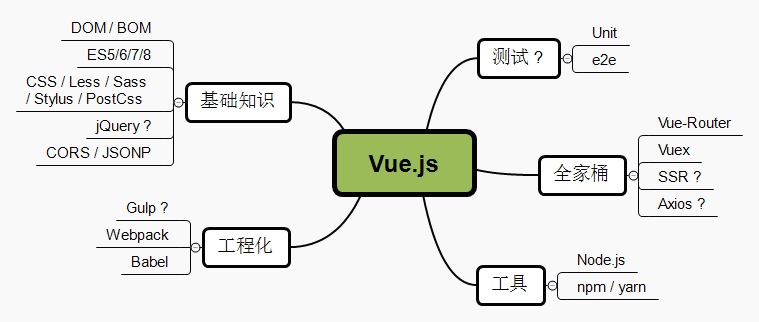

Vue 开发那些事
胡敏 @新蛋科技
About me
- 两年半偏后端开发，三年半偏前开发
- 不玩 weibo、知乎，不太喜欢微信的开发者
- 喜欢挖坑埋自己的开源爱好者
- 不太靠谱的 Vue 用户
- Github： hstarorg
- 博客园： 幻天芒
- 邮 箱： hm910705@163.com

- 我认识的 Vue
- Vue 项目结构&全家桶
- 应用迁移之路
- 一些小Case
我认识的 Vue
-
2015
- 2015年底，初遇 Vue
- Vue，一个 Angular.js 的模仿者？
-
新奇的玩具 双向绑定库 VS. Avalon？
-
2016
- 2016年6月，V1.0 已经发布一段时间了，是时候去踩一波了
-

-
有搞头 易用、灵活 生态圈壮大...
-
2017
- 16 ~ 17，成长已势不可挡
- Now，为时不晚
-
顶级框架 三分天下 中庸 - 微创新
Vue or Angular or React
-
Vue
- 1、 轻量级 UI 库 渐进式框架
- 2、多种使用方式，适应性强
- 3、高效变更检测，虚拟DOM，默认性能优化
- 4、单文件组件，灵活的文件组织方式
- 5、强大易用的 cli 工具（vue-cli）
- 6、大型项目实践相对较少
- 7、对 ES Next、TypeScript 支持较别扭
-
Angular
- 1、Google 背书，有 Angular.js 的成功经验
- 2、面向未来，原生TS支持
- 3、完善全家桶，开箱即用，适合偏后端系统
- 4、复杂度高（纯业务开发简单），基本强制TS
- 5、体积相对大
- 6、易用性相对差一些，高大上但少些亲和性
-
React
- 1、小巧，灵活，思维的创新
- 2、专注UI层，协力构建生态
- 3、拥抱 ES Next，工具链齐全
- 4、JSX 是把双刃剑
- 5、React Native
没有最好的，只有最合适的！强扭的瓜不甜！
当你会Vue，我会认为...
Vue 项目结构&全家桶
- 1、如何来规划一个项目的目录结构？
- 2、何时，我们该引入 Vue全家桶？
目录划分我之见
通用项目层次
目录结构进化
-
->
插件/组件库目录结构
-
- 1、具有业务无关性
- 2、跨项目共享
- 3、Maybe 开源？
- 4、开发一个组件库：
// index.js content import { COMPONENTS } from './components'; const install = Vue => { if (install.installed) return; install.installed = true; COMPONENTS.forEach(comp => { Vue.component(comp.name, comp); }); }; // Auto install if (typeof window !== 'undefined' && window.Vue) { install(window.Vue); }; export default { install, version: '0.0.1' };
常规项目目录结构
-
- 1、组件
- 2、页面
- 3、Filters & Utils
- 4、动态加载页面/组件：
import App from './app/App'; // import Home from './home/Home'; // import About from './about/About'; // import Layout from './layout/Layout'; // import NotFound from './notfound/NotFound'; const Layout = () => import('./layout/Layout'); const Home = () => import('./home/Home'); const About = () => import('./about/About'); const NotFound = () => import('./notfound/NotFound'); export { App, Home, About, NotFound, Layout };
复杂项目目录，拆分模块
-
- 1、项目模块化
- 2、每个模块类似一个简单项目
- 3、统一导出
-
// modules/product/pages/index.js const Page21 = () => import(/* webpackChunkName: "product" */'./page21/Page21'); const Page22 = () => import(/* webpackChunkName: "product" */'./page22/Page22'); const Layout = () => import(/* webpackChunkName: "product" */'./layout/Layout'); export { Layout, Page21, Page22 }; // modules/product/index.js import * as pages from './pages'; export default { path: 'product', component: pages.Layout, children: [ { path: 'page21', component: pages.Page21 }, { path: 'page22', component: pages.Page22 } ] }; // modules/index.js import userRotue from './user'; import productRoute from './product'; export const moduleRoutes = [ userRotue, productRoute ];
最后：粘合剂
import Vue from 'vue';
import VueRouter from 'vue-router';
Vue.use(VueRouter);
import * as pages from './pages';
import { moduleRoutes } from './modules';
const routes = [
{
path: '', component: pages.Layout, children: [
{ path: '', component: pages.Home },
{ path: 'about', component: pages.About },
...moduleRoutes
]
},
{ path: '*', component: pages.NotFound }
];
export const router = new VueRouter({
routes
});
引入全家桶
Vue-Router
- 1、什么是路由？
- 2、什么是客户端路由？
- 除非不是开发SPA，否则越早越好！
- 还有其他路由选择么？ 有！ But why？
Vuex


- 1、当你不清楚 Vuex 有什么用时，请不要使用它！
- 2、当你没有状态共享时，不必使用它！
- 3、/(ㄒoㄒ)/~~，编不下去了，我不太喜欢重用 Vuex！
- 当你觉得需要Vuex了，再来引入吧！ 自然而然！
应用迁移之路
Why?
- 1、或多或少，我们都可能会有些旧项目改造升级
- 2、选MV*？ Angular? React? Vue.js
- 3、整体迁移，一步到位！ 现实么？
- 更好的迁移之路是？ 页面级别的迁移！
单页迁移（Angular.JS）
-
// app.js const basePath = 'src'; angular.module('app', ['ngRoute']) .config(['$routeProvider', '$locationProvider', ($routeProvider, $locationProvider) => { $locationProvider.html5Mode(true); $routeProvider .when('/', { controller: 'HomeCtrl', controllerAs: 'vm', templateUrl: `${basePath}/pages/home/home.html` }) .when('/about', { controller: 'AboutCtrl', controllerAs: 'vm', templateUrl: `${basePath}/pages/about/about.html` }) }]); // home.controller.js (() => { class HomeCtrl { constructor() { this.hello = 'I\'m Home Page'; } } angular.module('app') .controller('HomeCtrl', HomeCtrl); })(); // index.js import './src/app'; import './src/pages/home/home.controller'; import './src/pages/about/about.controller'; import './src/bootstrap'; // webpack.config.js const path = require('path'); module.exports = { entry: { app: './index.js' }, output: { path: path.join(__dirname, './dist'), filename: 'js/[name].js' }, module: { rules: [{ test: /.js$/, loader: 'babel-loader' }] } };
引入Vue
以上都是乱写的！
一些小Case
Q1：为啥我修改了数据，UI不刷新？
Show a random string:
{{user.rnd}}
<script>
export default {
data() {
return {
user: {}
};
},
methods: {
setUserName() {
this.user.rnd = Math.random().toString(16);
}
}
};
</script>
How?

Why?
var user = {};
user.name = 'XXX';
function defineReactive(obj, key, value) {
var property = Object.getOwnPropertyDescriptor(obj, key);
var getter = property && property.get;
var setter = property && property.set;
Object.defineProperty(obj, key, {
configurable: true,
enumerable: true,
get() {
return getter ? getter.call(obj) : value;
},
set(newVal) {
// 先取出当前值
var val = getter ? getter.call(obj) : value;
// 值一样，直接return
if (newVal === val || (newVal !== newVal && val !== val)) {
return;
}
// 把值设置回去
if (setter) {
setter.call(obj, newVal);
} else {
value = newVal;
}
console.log('我被改变了');
// todo: 这里可以发布通知
}
})
}
var user = {};
defineReactive(user, 'name', 'abc');